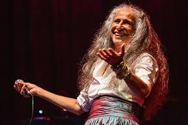
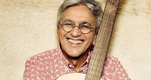
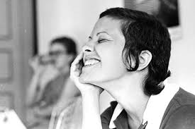

A Música Popular Brasileira, conhecida como MPB, surgiu durante a Ditadura Militar no Brasil, na década de 60, e como uma nova opção de estilo musical, logo após a Bossa Nova. A MPB reflete a reunião de ritmos e movimentos musicais já presentes no país, trazendo um novo conceito de “música nacional”.
A MPB surgiu com novos compositores e intérpretes, além de um novo ritmo, algo que não era samba, não era bossa nova, mas mantinha características como a suavidade e o regionalismo já presente nesses ritmos.
Os maiores impulsionadores desse novo ritmo foram os festivais de música que faziam grande sucesso na televisão. Nesse momento, surgiram artistas como Elis Regina, Milton Nascimento, Chico Buarque, Edu Lobo, entre outros. A MPB ficou conhecida no país como “a música da universidade”, por ter o seu maior público entre intelectuais e estudantes.
Maria Bethânia

Maria Bethânia Viana Teles Veloso é uma cantora e compositora brasileira. Na juventude, Maria Bethânia participou de peças teatrais ao lado de seu irmão, o também cantor e compositor Caetano Veloso, você verá mais sobre ele abaixo, e de outros cantores proeminentes da época.
Nasceu em 1946, na cidade baiana de Santo Amaro da Purificação. Seu nome foi sugestão do irmão Caetano Veloso, que na época tinha apenas quatro anos de idade. É filha do Senhor José Telles Velloso e de Claudionor Vianna Telles Velloso, a Dona Canô.
Desde cedo, Bethânia dizia à mãe que queria ser artista. Queria ser atriz e chegou a atuar em algumas montagens, mas a presença do irmão Caetano a influenciou para seguir a música. Em 1963, seus caminhos entre o teatro e a música começaram a se misturar quando ela subiu ao palco pela primeira vez para cantar. Na ocasião, Caetano foi convidado pelo amigo Álvaro Guimarães, Alvinho, para musicar a peça "Boca de Ouro", de Nelson Rodrigues.
No mesmo ano, Bethânia e Caetano conheceram artistas como Gilberto Gil, Gal Costa e Tom Zé, que se tornariam parceiros de arte e de vida. Dois anos mais tarde, em 1965, Bethânia se mudou para o Rio de Janeiro a convite de Nara Leão para a peça "Opinião", e em pouco tempo lançou o disco Maria Bethânia, com a música "Carcará", que se tornou um grande sucesso.
Sua carreira é marcada pela forte presença nos palcos e o lançamento de diversos álbuns. Em 1975, se encontrou com Chico Buarque e, juntos, eles lançaram o disco Chico Buarque e Maria Bethânia, que foi gravado ao vivo no tradicional Canecão, no Rio de Janeiro.
Em 1976, Bethânia, Caetano, Gilberto Gil e Gal Costa uniram seus talentos para formar o grupo Os Doces Bárbaros. A trajetória dos quatro artistas ficou registrada em um filme e tem um álbum duplo homônimos, lançados naquele ano.
Caetano Veloso

Caetano Veloso (1942) é um músico brasileiro, um dos criadores do Movimento Tropicalista no Brasil, sendo um dos músicos mais influentes do país. Criou e cantou canções de destaque como “Sozinho” (intérprete), “Leãozinho”, “Você é Linda” e "Sampa”.
Em 1960, a família voltou à Bahia, indo morar em Salvador. Nessa época, Caetano Veloso ganhou um violão e passou a cantar com sua irmã Maria Bethânia, em bares de Salvador. Ingressou na Faculdade de Filosofia da Universidade Federal da Bahia. Em 1964 participou do show ”Nós, por exemplo”, ao lado de Gal Costa, Gilberto Gil, Bethânia e Tom Zé, na inauguração do Teatro Vila Velha.
Em 1965, Caetano voltou para o Rio de Janeiro acompanhando a irmã, convidada para participar do show Opinião. Nesse ano, compõe “Boa Palavra”, que é interpretada por Maria Odete e classifica em quinto lugar no II Festival de Música Popular Brasileira da TV Record. Em 1967, ao lado de Gal Costa, Caetano grava “Domingo”, seu primeiro disco. A música “Alegria, Alegria” é classificada em quarto lugar no III Festival de MPB da TV Record.
Em 1967, Caetano Veloso se apresentou no III Festival da Música Popular Brasileira, da TV Record, quando cantou “Alegria, Alegria”, acompanhado pela banda de rock os Beat Boys, incomodando os conservadores, mesmo assim conquistou o 4º lugar, se tornando o marco inicial do Tropicalismo - movimento que participavam Caetano, Gil, Gal, Tom Zé e Torquato Neto, que unia ritmos regionais e guitarras elétricas que transformou a MPB.
Na década de 80, Caetano Veloso continuou fazendo shows e lançando discos, entre eles, “Outras Palavras” (1981), “Caetanear” (1985) e “Totalmente Demais” (1986). Ao lado de Chico Buarque, apresentou na televisão, o programa “Chico & Caetano”, onde cantava e recebia convidados.
Em 1992, Caetano completou 50 anos e comemorou com o lançamento do álbum Circulandô, que recebeu o Prêmio Sharp de melhor canção, intérprete e projeto visual. Em 1997, lança o livro “Verdade Tropical”, onde descreve sua formação musical e seu trabalho como cantor e compositor. Seus últimos álbuns lançados foram: "Zii e Zie" (2009), "Abraçaço" (2012).Caetano Veloso tem canções em trilhas sonoras de filmes como Hable com Ella, de Pedro Almodover e em Frida, de Julie Taymor.
Elis Regina

Elis Regina (1945-1982) foi uma cantora brasileira, considerada por muitos como a melhor cantora brasileira de todos os tempos. Sua morte precoce a transformou em mito. Diversas canções foram eternizadas na sua voz, entre elas: Águas de Março, Casa no Campo e Como Nossos Pais.
Em 1960 foi contratada pela Rádio Gaúcha. Nesse mesmo ano foi eleita a “Melhor Cantora do Rádio”. Em 1961, com 16 anos, viajou para o Rio de Janeiro onde lançou seu primeiro disco, "Viva a Brotolândia".Em 1964, já se apresentava no eixo Rio São Paulo. Assinou contrato com a TV Rio, para se apresentar no programa "Noite de Gala". Sob a direção de Luís Carlos Miele e Ronaldo Bôscoli.
Nessa época, Elis criou os gestos que se tornaram sua marca registrada. Quando cantava, levantava os braços e girava-os. Também se apresentava no "Beco das Garrafas", reduto da Bossa Nova.Ainda em 1964, Elis muda-se para São Paulo. Em 1965, fez a sua estreia no festival da Record com a música “Arrastão”, de Edu Lobo e Vinícius de Moraes.
Era uma artista eclética, interpretava canções de vários estilos, como MPB, jazz, rock, bossa nova e samba. Levou à fama, cantores importantes como Milton Nascimento, João Bosco e Ivan Lins. Fez dueto com Tom Jobim, Jair Rodrigues, entre outros.Entre os seus álbuns destacam-se: Ela (1971), Elis e Tom (1974), Falso Brilhante (1976), Essa Mulher (1979), Saudade do Brasil (1980) e Elis (1980).
Elis Regina foi encontrada no chão de seu quarto do seu apartamento no bairro dos Jardins, por seu namorado Samuel MacDowell, que arrombou a porta e tentou socorre-la, mas ela já chegou sem vida ao hospital. Elis Regina faleceu com apenas 36 anos, em São Paulo, no dia 19 de janeiro de 1982. Sua morte foi decorrente do consumo de cocaína e o uso exagerado da bebida alcoólica.